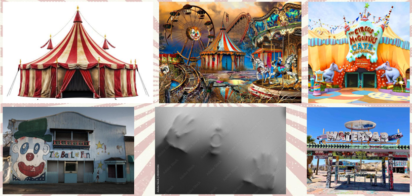
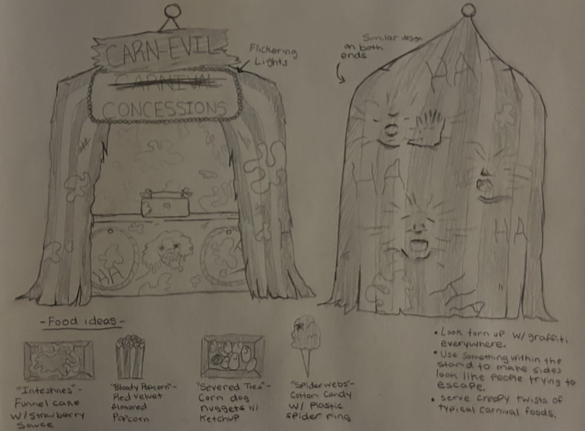
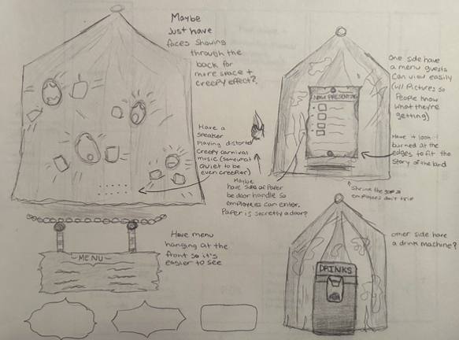
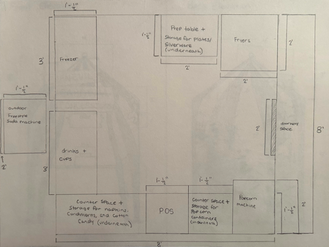
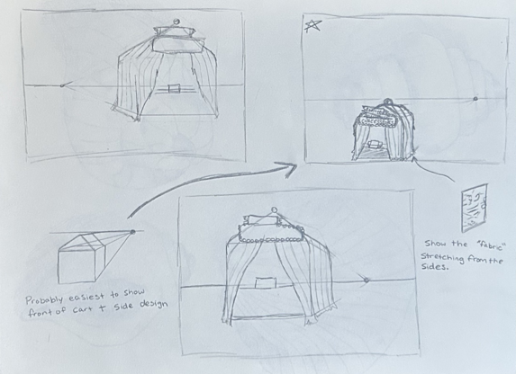
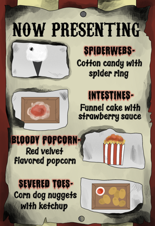
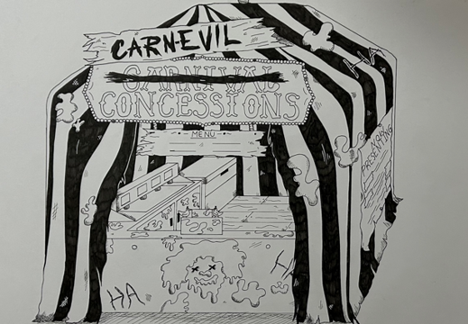
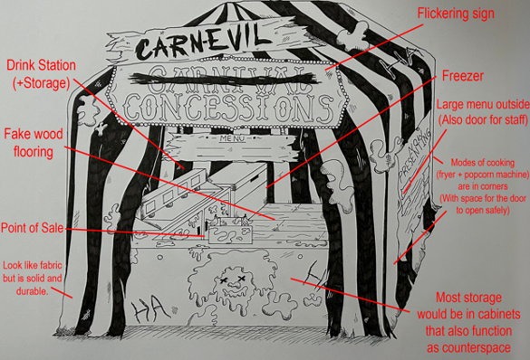

Prompt:
Problem:
Role: Concept designer



Process:





Reflection:
-Learned how to combine storytelling with an operational design.
-Helped me become better at using creativity with physical constraints.
-Gained experience on presenting concepts.